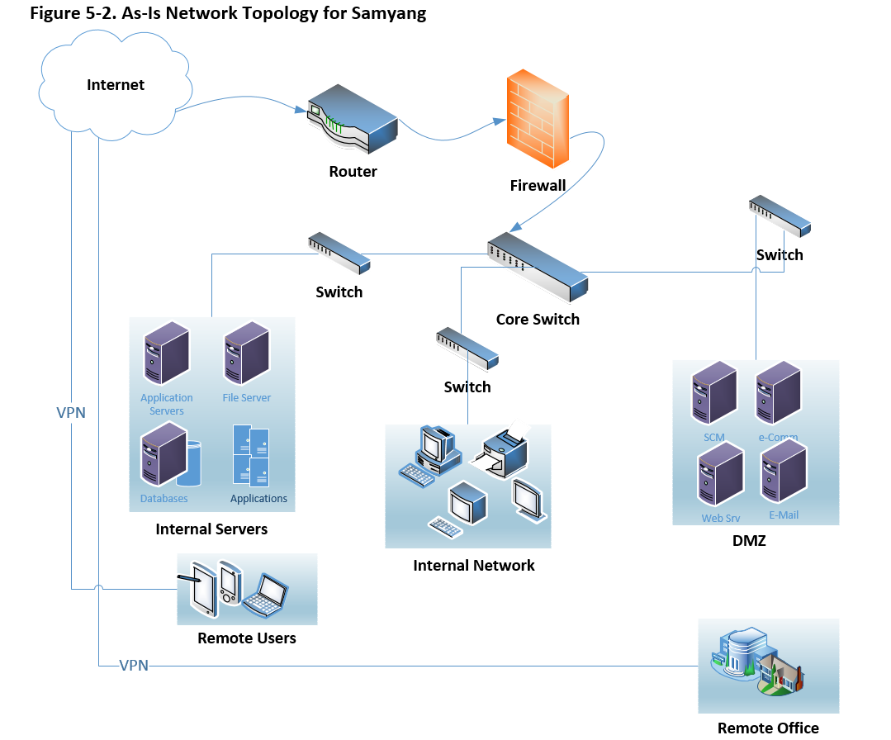
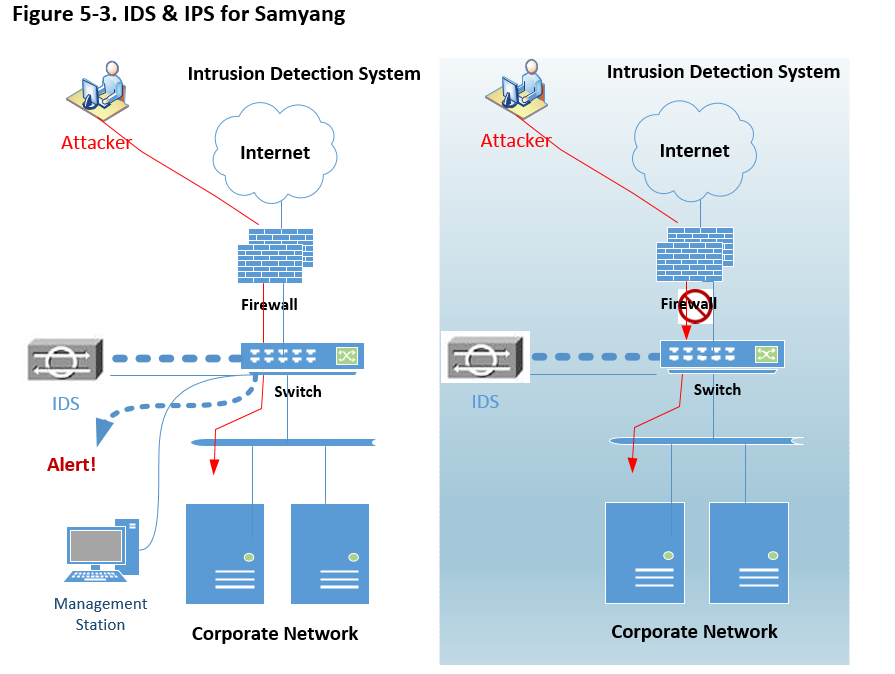
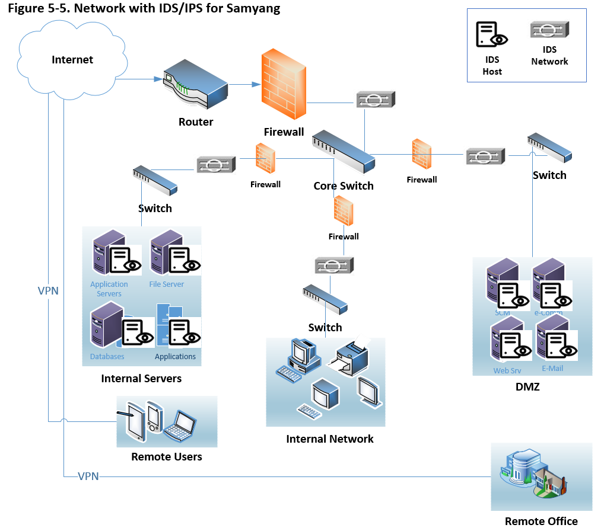

Computer
Systems Security Foundations - Information Security Proposal
Abstract
The security concern is paramount in highly connected in modern computing environments. This case study reviews the fundamental of information security, how to assess the security risk, access control security mechanism, security compliance, and the network security for the fictional company Samyang. Most companies have been implementing multiple enterprise solutions to maximize the customer satisfaction and minimize overhead and additional costs, in turn, it requires more secured network topologies.
Keywords: security, risk, risk mitigation
Table of Contents
Introduction
to Information Security (Week 1)
The
need for Information Security
Challenges
When Allowing Consultants to Work On-Site
New
Challenge Introduced by the Recent IPO..
Analysis
of Current Network Topology and Risks.
Phase
6 - Risk Reporting Resolution
Access
Controls and Security Mechanisms (Week 3)
Access
Controls of Enterprise Solutions
Access
Controls to the Wi-Fi Network
Network
Authentication Schemes
Security
Policies, Procedures, and Regulatory Compliance (Week 4)
Regulatory
Requirements of Sarbanes-Oxley
Intrusion
Detection Systems (IDS)
Intrusion
Prevention Systems (IPS)
Project Outline (Week 1)
Organization Description
Samyang, a sugar manufacturer in Korea, has more than 80 years of business history with over 5,000 employees worldwide. The business comprises,
- Overseas sugar cane suppliers in Indonesia and Brazil
- Two sugar refining plants in Korea
- Overseas< sales offices and warehouses in Seoul, Shanghai, New York, and London
- And numerous customers for the sugar as producer goods or finished goods globally
To streamline the business, Samyang has been implemented the enterprise solutions, Planning (Oracles Fusion using Hyperion), Supply Chain Management (SCM, Oracles Fusion), Enterprise Resource Planning (ERP, JD Edwards EnterpriseOne), Customer Relationship and Management (CRM, Siebel Business Application) (Oracle, 2017). Now to minimize total cost of ownership, Samyang has moved these enterprise solutions from on-premises to the private Cloud.
Project Requirement
Commonly
risk is the probability of a threat agent exploiting a vulnerability and the
associated impact (Harris, 2013). Where vulnerability is a flaw or weakness in
any aspect of the system (Elky, 2006). Hence the loss of integrity, the loss of
availability, and the loss of confidentiality are a potential risk for Samyang
because this consequence comes when risk is not properly mitigated (NIST, 2012).
So
the purpose of this project is to assess the risk which Samyang has and perform
proper risk management on information security. Since the business takes place
globally using the Internet, Samyang needs to put special emphasis on the
threat on the Internet.
Not
to lose any market share in the global market, Samyang has to identify threats,
vulnerabilities, and related threats to vulnerabilities. Then based on
identified threats/vulnerabilities, Samyang is to assess risk properly. The general
way to manage the risk are mitigated it, transfer it, accept it, and avoid it
(Elky, 2006). Through this proposal, we determine where Samyang is now and
possible future position regarding security where this upgrade encompasses hardware upgrade, enterprise
solutions upgrade, and migrating to the virtual environment to meet the
industry requirement which changes rapidly.
.
Introduction to Information Security (Week 1)
The need for Information Security
It will be meaningful to recap some of the definitions before discussing the potential risk. According to NIST, the threat is the potential for a threat-source to exercise a specific vulnerability, and threat-source is either (a) intent and method targeted at the intentional exploitation of a vulnerability or (b) a situation and method that may accidentally trigger a vulnerability (NIST, 2012). This definition is stem from the information system, but same expands information in general which Samyang hold whether it is proprietary or not.
The Need
The enterprise solutions currently Samyang implemented expose higher visibility to the public as well as internal users. Hence the need to protect information to make sure its confidentiality, integrity, and availability to those who need it for making a business decision are paramount.
Potential Risk
Since risk is a function of threats exploiting vulnerabilities to obtain, damage or destroy assets. In this context, here we briefly review information assets, threats, and vulnerability. First of all, vulnerability is a weakness in information systems, policies, and procedure. So the biggest threat for Samyang will be the pieces from SCM, CRM, and e-commerce. The first two enterprise solutions are related to suppliers and customers where the last is the anonymous access through the Internet.
Possible Gain
Through this project, Samyang will review the information asset including the operating systems in the cloud, the topology of networks to assess information security. Hence the benefit through this project is to set the position Samyang set and prevent the loss of 3 pillars, confidentiality, integrity, and availability which is the ultimate goal for any entity.
Overall, through this project, check unauthorized access, alteration, or destruction of information, malicious software program, poorly designed information system, social engineering, system or communications disruptions, physical theft, and so on (Tarte, 2003).
Challenges When Allowing Consultants to Work On-Site
As a due course to save the cost of running enterprise solutions as an on-premises basis, it is inevitable to hire and allow the on-site consultant to perform to configure the business processes and set up security itself which can be highly sensitive. In turn, this approach opens up some concerns, one is physical access to the information assets, and another one is access right to the critical system or information. Many times wrongly configuration systems can cost millions let along which may cause loss of confidentiality, integrity, and availability of information systems.
The biggest challenge in hiring external on-site consultant can be, accessing multiple systems, applications, in turn, which allows him to access the sensitive data which can cause information theft, or disrupt the integrity of data. Secondly, allowing him to set up a certain configuration, or deciding the behavior of certain solutions, which disrupt daily business. Lastly, he can access the site physically where a huge amount of confidential information is discussed, and sneaked, and get the information on network structure for a certain space.
So it is important to monitor and countermeasure all access given to the consultant with a proper checklist during and after his work by describing all legal responsibility through Service-level agreement (SLA).
New Challenge Introduced by the Recent IPO
Recent initiative on Initial Public Offering (IPO) gives the opportunity for Samyang getting more investment to run a business but at the same introduced some challenges which need close look because of the information on business moves to the public. Hence this change requires tighter security in private domain and public domain because many fall prey into the urge to make use of information to make a profit from the share price changes.
Any company in public domain has to meet the requirement in the area of compliance, operational, strategic, and financial area (Ernest & Young, 2013). And Samyang has to comply with tightening regulatory, legal, and code of conduct as risk management. And strategy wise communications and investor relations, market dynamics, merger acquisition and divestiture, and major initiatives, planning and resource allocation, and governance are to be reviewed accordingly. All these aspects eventually require new and proper security management because these are the opportunities which are challenges at the same time.
The access control has to be a key element which is about identification, authentication, authorization, and accountability to mitigate these internal and external challenges (Harris, 2013). And these controls need extending human asset, systems for both hardware and software, physical asset. In IPO environment, management accountability can transit to thousands of new stakeholders and owners. And investors can have confidence only when Samyang understands the challenge it faces and the proof that challenges are being properly mitigated and the internal control structure is solid.
Security Assessment (Week 2)
As
a sustainable enterprise, Samyang is planning to implement direct sales
solution to the end-users where they supply intermediate goods to other
consumer product manufacturers. But this business model needs changing to have
a competitive edge in the global market. So for this transition, Samyang is
planning to implement e-Commerce product which allows the ordinary consumer buy
goods using the Internet.
Before
we move forward, we review current asset, network topology and possible risk
which is associated current and future enterprise structure.
Current Assets
Likewise other manufacturing company, Samyang is highly relying on the enterprise solutions to have better productivity and run cost-effective business manner. Since on-premises are dying, Samyang is making use of a typical mix and match approach, which implements a certain module of a certain software. Below table 2-1 are the enterprise solutions currently in using,
Table 2-1
Applications and communication channel
|
Requirement |
Product |
Description |
|
Planning Communication with multiple servers to collect data |
Oracle Hyperion |
Hyperion for planning which collects all
transaction data and plans for supply
and demand. ERP solution can utilize these planning as it is or uses it for
forecasting because most of ERP software is lacking
planning feature. Protocol: User Datagram Protocol. The Internet
Protocol Suite. UDP provides a way for
applications to send encapsulated IP diagrams without having to establish a
connection (Tanenbaum & Wetherall, 2011). User Diagram Protocol is operating
system independent.
|
|
SCM Supplier to DMZ server through the Internet |
Oracle SCM Cloud |
Supply Chain Management solution allows
multiple suppliers or supply chain to access system to enable actual supply
in real time. Protocol: Transmission Control Protocol. TCP aims for a
reliable end-to-end byte stream over an unreliable internetwork (Tanenbaum & Wetherall, 2011). The reason to
implement TCI is that reliability is the main concern or higher integrity. |
|
ERP HTML client to JAS, JAS to Logic Server |
Oracle JD Edwards EnterpriseOne |
Enterprise Resource Planning is the
backbone system for Samyang which hold all transactions including, Sales,
Procurement, AR, AP, GL, and HR Payroll. Protocol: Secure Hypertext Transfer Protocol (HTTP) which is the application layer protocol. Authentication to the HTML Server, Java Application Server (JAS), and Enterprise Server which comprises a logic server and database server. |
|
CRM HTML client to CRM Server |
Oracle Siebel |
Customer Relationship Management is to
give the best customer service for sales and after sales. Protocol: Virtual Local Area Networks (LANs). VLANs on VLAN-aware switches with the help of configuration tables in the bridge (Tanenbaum & Wetherall, 2011). |
Note: In a real system, a single enterprise solution can have multiple protocols because the same application requires multiple servers. Supply Chain Management (SCM), Enterprise Resource Planning (ERP), and Customer Relationship Management (CRM) are all from Oracle because these products are moving from on-premises to the cloud including the data center. This table contains the protocol to have better communication mechanism.
Analysis of Current Network Topology and Risks
The enterprise solutions upgrade project for Samyang encompasses the security assessment with current IT assets and future IT assets including the solutions to the cloud as much as possible. Possibly starting with a private cloud, then a hybrid eventually moves the whole enterprise to the public cloud. These overwhelming trends give Samyang great opportunity of cost-saving let along easier mitigation of risk.
Below is simplified the topology for the network of enterprise solutions. Currently, limited and controlled external user can access SCM suite/application through the firewall to have better security.

Samyang is implementing e-Commerce which opens up the consumer product to the anonymous the Internet users.
Table 2-2
Application to implement and protocol
|
Requirement |
Application |
Description |
|
e-Commerce Public user to e-Commerce Server |
Oracle e-Commerce |
e-Commerce is common
application for online shopping for Samyang in expanding its business Protocol: Internet
Protocol. The Internet Protocol of the network layer on the Internet. At this moment, this protocol gives better means to have security than others. |
Note: The table 2-1 and 2-2 describes the protocol possible to have better security opportunity. However, the protocol is methodology, not the asset itself.
By adding in additional enterprise solution Oracles e-Commerce, which requires new approach on security settings as depicted below,

Since e-Commerce module opens the door to the public or public network which introduces additional means to access Samyangs network, resources, software, and database. According to Symantec, the Web-based attack has increased 30% in 2017 compared to an incident reported in 2016 (Symantec, 2017).
Risk Assessment Methodology
A methodology is a due course before we move to the risk assessment. Here we review a typical methodology based on Samyangs business activities.
Phase 1 - Project Definition
To fulfill successful e-Commerce implementation, here we review potential risk to face by implementing additional layer or network or communication channel.
Phase 2 - Project Preparation
e-Commerce is opening the door to the anonymous users through the Internet. So this project extends the scope of stakeholder. Not to miss any critical information flow, possibly Samyang build a task force team and prepare for this project. A team comprises external consultant from a software vendor to explain the product and considerations, product line to determine the category of a consumer product to maximize profit, security analyst to review the risk on the new network, and power user who is familiar with application functionality.
Phase 3 - Data Gathering
Since this business model is new to Samyang, proper data are to be collected and analyzed on inventory, billing system, the cost and value of new implementation, potential cost to keep confidentiality, integrity, and availability in detail. These data can be categorized into administrative, technical, and physical data.
Phase 4 - Risk Analysis
In limiting the domain of asset into information security asset, which includes company trade secret as confidentiality factor, a financial transaction on the figure as integrity concern, and e-Commerce server as availability (Harris, 2013). So Samyang has to regularize the risk assessment based on these categories.
When
threat source or threat agent is an intentional or unintentional factor to trigger
vulnerability (NIST, 2012). So the risk is the probability of a threat agent exploiting
a vulnerability and the associated impact (Harris, 2013). Where vulnerability
is a flaw or weakness in any aspect of the system (Elky, 2006). Hence the loss
of integrity, the loss of availability, and the loss of confidentiality are a potential
risk for Samyang because this consequence comes when risk is not properly
mitigated (NIST, 2003).
Phase 5 - Risk Mitigation
Commonly, mitigation is known for the best risk management strategy (Elky, 2006). The mitigation includes fixing the issue found or supply some types of compensatory control to reduce the likelihood or impact. Since this project is to assess the risk factor of e-Commerce, install the patch from a vendor, Oracle whenever it is available. So make the application as a coded current where availability is the main concern. Possibly, secure connection for online checkout using SSL, require a stronger password, set up automated system alert for any suspicious activity. And make Payment Card Industry (PCI) scan mandatory.
Phase 6 - Risk Reporting Resolution
Based on confidentiality, integrity, and availability requirement, encryption, access control, software digital signing, redundancy, clustering are highly recommended.
Likewise the risk management in the financial sector, it is important to have risk assessment report which is accurate, complete and timely in dealing with IT security. Based on the assessment report, a feasible action plan needs executing.
Risk report comprises what is existing threats, vulnerabilities, and how threats are related to vulnerabilities, what is the likelihood of threat/vulnerability, what will be the impact when being attacked, what is the risk company has to bear.
Hence, this report should elaborate all risks, how to communicate, what is the strategy, which tools to use (e.g., National Institute of Standards & Technology (NIST) Methodology).
Risk Mitigation
Since both human and financial resources are limited, it is important to prioritize the risk based on the assessment made. Supposing that the risk report represents each risk, the proper strategy needs presenting, to have an acceptable level of risk for an acceptable cost. Commonly, risk mitigation comprises,
Transference: in modern IT environment, this is very common practice. Most of the companies do not have system administrators anymore by imposing this role to the cloud or data centers. Whether the data is a public cloud or private cloud, this approach has great financial benefit so long as a company spells out the expectation properly.
Acceptance: when risk is low, and mitigation cost extremely high; this approach is acceptable. In many real worlds, companies compromise a certain level of risk. More often than not, business managers take this approach because the return on investment is the main concern for them. However, as IT personnel, it is important to look for alternative or way to walk around any security concern.
Avoidance: this is practice to remove the vulnerability aspect from the system. However, many times this approach need compromising though more features opt to have more vulnerability. So there can be a conflict between the users and service provider nevertheless.
Access Controls and Security Mechanisms (Week 3)
As
multiple enterprise solutions/software for Samyang enables better visibility of
assets and profit, in turn, which requires a higher level of access control to
meet the security goal Confidentiality, Integrity, and Availability. Since the
environment moves to the cloud, it is high time for Samyang to have proper risk
management.
In
this section, we shall discuss the opportunities of Access Controls of Existing
Enterprise Solutions, Access Controls to the Wi-Fi Network for both internal
and external users, and lastly, the network authentication schemes which is the
front end in the access control.
Access Controls of Enterprise Solutions
One of the possible benefit of having one software vendor, Oracle for Samyang is that all the solutions have same look and feel, which gives synchronized access control across the enterprise solutions. Table 3-1 reviews proposed access control for the products from Oracle.
Table 3-1
Enterprise Solutions Access Control for Samyang
|
Enterprise Solutions |
Proposed Access Control |
||
|
|
Identification/Authentication |
Authorization |
|
|
Planning Oracle
Hyperion |
Lightweight Directory Access Protocol (LDAP) Technology |
Role-based access control
|
|
|
SCM Oracle SCM
Cloud |
Single sign-on (SSO) Technology |
Role-based access control |
|
|
ERP Oracle JD
Edwards EnterpriseOne |
LDAP |
Role-based access control |
|
|
CRM Oracle
Siebel |
Single sign-on (SSO) Technology |
Role-based access control |
|
|
e-Commerce Oracle e-Commerce |
Single sign-on (SSO) Technology |
Role-based access control |
|
|
|
|
|
|
|
|
|
|
|
|
Desktop Microsoft
Windows 7, 10 Professional |
Drive Encryption & Domain Name Service (DNS) based security |
Role-based access control |
|
Note: Though Samyang is running multiple enterprise solutions based on mix and match configuration, the access control is seamless across applications.
Simplified LDAP configuration for multiple enterprise solutions depicts below,

For this example, the Security Kernel performs authentication against LDAP Server. Possible benefit of LDAP configuration is,
· Central administration and repository for user profiles across the system.
· You can easily maintain user profiles in a single location that serves multiple end-user applications.
· Reduced complexity.
· You are not required to use several applications to maintain user profiles. Also, users are not required to maintain multiple passwords across multiple systems (Oracle, 2017).
On the other hand, Role-Based Access Control is to give the exact permissions they need. Because too many permissions can be an easier target for the intruder (Microsoft, 2017). Supposing that the enterprise solutions are sitting in the Cloud, possible diagram can be,

Access Controls to the Wi-Fi Network
Access the Internet or other applications through a wireless connection is commonplace. The most organization has Local Area Network (LAN) as infrastructure, but at the same time, these organization allows users or guests to access own network using Wi-Fi connection. In turn, this wireless connection open questions: How to authenticate wireless users, How to sub-group wireless user to enforce security policy, How to segregate port based controlling, How to deal with a captive portal (portal provided without LDAP), How to deliver the Quality of Service (for network congestion control), How to limit bandwidth, and How to integrate it with existing Network Access Controller (NAC) device (Rajesh, 2009).
According to Cisco, NAC Appliance to authenticate, authorize before a certain user accessing the companys network, which has capability like,
· Identify user, the device, and the role in the network
· Evaluate whether devices are compliant with the security policy
· Enforce security policy
· Supply easy and secure guest access
· Audit report (Cisco, n.d.)
Since Samyang is moving the enterprise into the Cloud, it is a convenient tool to make use of Active Directory service provided by the Cloud vendor.
Network Authentication Schemes
Single Sign-On
As technology evolves, the role of authentication moves from hardware to software which is sitting in front of any access to the network. Since current enterprise solutions are highly distributed, decentralized or virtualized, it is essential to have a capacity of Single-sign-on (SSO) authentication. As mentioned earlier, on-premises are dying, which in turn, the enterprise shift to the Cloud. Hence, SSO links to the authentication part of an identity system. So its main concern is establishing the identity of the user and share this identity with another subsystem within the network (Peyrott, 2015).
Simplified SSO authentication can be, 1) A user browser on domain 1, 2) redirect to the domain 3, 3) either log on or use cookie, 4) store cookie, 5) send token and redirect, 6) authenticate using token, 7) store domain cookie, 8) now same user accesses to domain 2 which repeats steps described from 1 through 7. To visualize the steps for authentication, a typical SSO is depicted below,

So whenever the user goes to a domain need authentication, the user gets redirected to the authentication domain (Peyrott, 2015).
Virtual Private Network
The more cybersecurity is the main concern, the more secured wireless network is essential. In a sense, the private line can be most secure because two parties can communicate through without having any interference. However the complexity of network makes this idea almost impossible, so Virtual Private Network (VPN) comes into the picture. So VPN is all about how to establish reliable communication between the client(s) and server(s) when an intranet is an expensive option.
There two general types of VPN: one is Remote-Access which is a user-to-LAN connection, and another is Site-to-Site (Cisco, 2008). So well-designed VPN incorporates with Security, Reliability, Scalability, Network Management, and Policy Management. Possible benefit of VPN will be,
· Extend geographic connectivity
· Reduce operational cost (versus WANs)
· Simplify network topology
· Global networking opportunity (Cisco, 2008).
Security Policies, Procedures, and Regulatory Compliance (Week 4)
It is mandatory to complete training on Protected Health Information (PHI) Handling Requirements under the Health Insurance Portability and Accountability Act (HIPAA) yearly in many organizations. Commonly, this training described the responsibility of the personnel who attains various data from customers, which is to be purged at the end of debugging. On the other hand, the Sarbanes-Oxley Act (SOX) of 2002 sets regulatory requirements to follow for awareness in general and management of internal controls in any public corporations (Stults, 2004). Hence, the implications are any financial information which is commonly generated through the enterprise solutions are not be compromised through safeguard and integrity. And this, in turn, requires specifying internal security control to protect this data including auditing for this same yearly.
In Samyangs moving toward public domain which requires tight requirements to meet legal, regulatory, and code of conduct as risk management to protect all stakeholders involved. Through the implications of SOX, corporate governance practices transparent to improve investors confidence through minimizing risk, automating processes, preventing fraud, and providing comprehensive auditing and reporting. Here we are reviewing regulatory requirements of Sarbanes-Oxley, policy to implement, how to control it, and how to protect data.
Regulatory Requirements of Sarbanes-Oxley
The Section 404 of Sarbanes-Oxley Act has two main compliance requirement as below,
· Higher management (CEO, CTO, and CIO) is accountable for establishing and maintaining internal controls and procedures to enable accurate financial reporting and assessing this assessment yearly-basis in an internal control report.
· Public accounting firm performs auditing must attest to, and report on, must be assessed by management annually.
· To meet this requirement,
o List all deficiencies internal controls and information, as well as report any fraud involving internal employees.
o Detail significant changes in internal controls, or factors that could have a negative impact on internal controls (Thalese, n.d.)
Policies
Whenever there is a change in software, the vendors are actively deciphered the regulation, act, and law actively. So it will be meaningful to review the controls in place for a certain product or policy to prevent, detect, and remediate of fraudulent or negligent activity through internal controls. Because it will be beneficial to Samyang having correct information, accurate information, risk awareness, audit efficient, breadth of coverage, redundancy reduction, error reduction, consistency, sustainability, and business efficiency (Oracle, 2010). Below Table 4-1 are examples of policy to implement to comply with SOX requirements.
Table 4-1
Policy to meet SOX requirement for Samyang
|
Policy |
Description |
|
General Policy Ø Acceptable Use Policy |
This policy defines acceptable
use of equipment and computing services, and the appropriate employee
security measures to protect the organizations corporate resources and proprietary
information. |
|
General Policy Ø Password Construction Guidelines |
To define how the network
password needs constructing. For instance, longer than eight digits contain
at least one Uppercase character, Numeric values, and symbol (special character),
which differs for laptop encryption, VPN, and SSO for other network access. |
|
Network Security Policy Ø Remote Access Policy |
This policy is to define
requirements for what type of remote desktop software can be used and how it
must be configured. Since Samyang has multiple enterprise solutions, it is
inevitable to access different machines with a different domain server.
Control the access based on role-based access control discussed above. |
|
|
|
|
Server Security Policy Ø Database Credential Policy |
As discussed previous
work LDAP is suggested access control. This policy defines the requirements
for securely adding and viewing database username and passwords for multiple
enterprise solutions. In general, however, it is making use of the proxy user,
so LDAP is highly recommended to enforce the limited access per role
defined. |
|
|
|
|
Applications Security Ø Web Application Security Policy |
The end-users access the
application using HTML client where Java Application Server controls the
behavior of software. This policy defines the requirement for completing a
web applications security assessment and guideline. As multiple cybercrime reports,
this access point needs higher controlling (SANS, n.d). |
Note: To simplify the policy to meet SOX requirement, the policy is categories with General, Network Security, Server Security, and Application Security. In detail, each category can have more than one policies.
In detail, the list of to-do list are: Assign and control user access rights, Enforce segregation of duties policies, Adjust user access rights when responsibilities change, Revoke user access upon termination, Provide uniform access policy, Manage access based on business rules, Manage allocation of user credentials, Verity access right, Conduct periodic compliance assessments, Enforce secure access policies, and provide automated reports (Oracle, 2010).
Controls
It is high time for Samyang to have stricter controls to meet Sarbanes-Oxley Act (SOX) in going for IPO and implementing e-Commerce software to diverse the business to the public. It is recommended to implement Oracles Identity and Access Management to control the policy we have reviewed so far. Table 4-2 describes the controls to consider,
Table 4-2
Controls to meet the policy discussed for Samyang
|
Policy |
Description |
|
General Policy Ø Acceptable Use Policy |
This policy needs
controlling using identity administration to complete management of the
identity cycle for user identities and security credential to all managed
systems within an organization. Since access method is to be role-based
access using SSO and LDAP. |
|
General Policy Ø Password Construction Guidelines |
Identity management and
credential management controls the password construction policy. |
|
Network Security Policy Ø Remote Access Policy |
Possibly automated
provisioning and de-provisioning based on credential entered to assign user
privileges based on role or business rules. When a user has a change in
responsibility, user access rights have to be automatically changed or
revoked. |
|
|
|
|
Server Security Policy Ø Database Credential Policy |
This policy has to be controlled
using integrated provisioning and auditing. Each enterprise solutions have an
individual repository to hold the credential of users, so the access to the database
using LDAP to tighten illegal access and undesired modification of data. |
|
|
|
|
Applications Security Ø Web Application Security Policy |
Control to centralize and
enforce single sign-on (SSO) and internal Web applications and extranet
authentication. |
Note: To have proper control the Internet scale provisioning and identity auditing, business role auditing and impact analysis, and the control mechanism can produce comprehensive compliance reporting (Oracle, 2010).
Since Samyang is shifting from conventional client-server model to the Cloud and focusing on digital assets, below controlling mechanism suits:
· Web access management
· Federation: to extend access and enforce security policy across domain boundaries
· Web Services Security
· Security Token Service
· Enterprise access control
· Entitlement management
· Strong authentication and fraud prevention (Oracle, 2010).
Aside from access control, proper management of directory service, platform (operating systems) security need reviewing.
Protecting Data
The major focusing areas of Sarbanes-Oxley Act (SOX) are corporate governance and financial disclosure, which can be accomplished through data protection internally and externally. To protect data securely, various techniques can be used: Firewall, End Point Protection, Server Protection, Secure Web Gateway, Safeguard Enterprise, Mobile encryption, and Secure Email gateway and so on which are parts of Encryption and Access Controls. Samyang has implemented multiple enterprise solutions which have different audiences depending on the requirement of it. Here we review some different status of data Data at Rest, Data in Use, and Data in Motion.
Data-at-Rest
Whether data are stored in a solid-state drive (SSD) or a hard disk drive (HDD), which is considered as data-at-rest which is static status. The usual way to protect this type of data is through perimeter-based defenses like firewalls and anti-virus software. However, the intruder tries to access this status through the compromised network security. Hence, make it sure the network is secured properly, then encrypt data and distribute it to multiple locations which are commonly done in the Cloud.
Data-at-Motion
Compared with Data-at-Rest, the Data-at-Motion or Data-In-Transit are more vulnerable because multiple user/application can access it since it moves data from one location to another across the Internet or via a private network. The e-mail message and its attachment, moving data to cloud storage, removable drivers, or file transfer using the network are common examples of this state of data. So any data travel from one network to another network is considered data-at-motion or data-in-transit.
Commonly HyperText Transfer Protocol over Transport Layer Security (HTTPS over TLS), HTTP over Secure Sockets Layer (SSL), File Transfer Protocol Secure (FTPS or, FTP-SSL), Secure Shell Protocol (SSH), Post Office Protocol (POP3S) technology are in use to protect the contents of data in transit.
Summary
Whether the data sit in endpoints or networks, it is essential to protect it not to expose the organization at risk, let alone to comply with SOX. The encryption is considered the best approach, yet the best practice can be,
· Network Security Control: Firewalls and network access control
· Implement proactive security measure
· Choose proper data protection solutions
· Setup policies to categorize and classify all company data
· Choose right vendor to make use of secured cloud service (Lord, 2017).
Network Security (Week 5)
The
business nature of Samyang requires highly distributed network to maximize the
customers satisfaction and to minimize overall cost to source the ingredients
from suppliers and to sell its products to the customers. As we have reviewed,
the security risk, assessment, access control, and regulatory requirements in
going to the IPO organization, here we review possible network topology to
meets the topics explored so far. This network topology is associated with the
Cloud environment supposing that this shift is the best approach to the network
security, and network performance because it is proved configuration by now.
It is
important for Samyang to understand the network infrastructure to mitigate
potential security risk in the open network. Same depicts follows,

Here
we review some of the features in above diagram.
·
Router: function to filter the access hence this improve
network firewall security
·
Firewall: monitor network traffic, block trojans, stock
hackers, stop spyware/keyloggers
·
Switch: 802.1X Port-Based Network Access Control (PNAC) or
NAC. And managed switch enables the creation of Access Control Lists (ACLs)
Above
picture can depict based on the point of access as below,

It is important to review current security
technologies as below,
·
Firewall not to allow unauthorized users off the network
·
Virtual
Private Network (VPN) to give
business partners (both suppliers and customers) and employees secure access to
the network
·
Intrusion
prevention to detect and stop threats
before they harm the network
·
Content
security to protect the network from
virus, spyware, and other attacks
·
Secured
wireless network (Wi-Fi) to supply safe
network access to visitors and mobile employees
·
Identity
management to give control over
who/what can access the network
·
Compliance
validation to ensure that any devices
accessing the network meet the security requirements (Cisco, n.d.).
These
technologies have to support policies which Samyang implements. Possibly,
acceptable use policy, communication policy, antivirus policy, identity policy,
password policy, encryption policy, and remote access policy.
So
far we have reviewed the security in the network based on network
infrastructure. On top of this topology, it is important to implement software
for anti-virus and data-loss prevention system.
Firstly,
network-based antivirus software is taking over the position of conventional
host-based anti-virus software rapidly, and this trend continues. Putting the
software in the network layer which can detect attacks for real-time hence, it
yields better performance. And this configuration is ready to implement Network
Intrusion Detection System (NIDS) which have advantages: protection of Local
Area Network (LAN), easy to upgrade, platform independent, and this enables the
packet rejection.
Many
security software vendors provide Data Loss Prevention (DLP) system which
Samyang has to go for because there are open risks: e-mail messages contain
confidential data, some of the network files are wrongly exposed, confidential
data is stored in the laptop and lost/stolen, and missing USB drives with
confidential data. As we have reviewed during week 4, there are data in Motion,
Data at Rest, and Data at End Points. Using DLP systems: you can identify the
location of confidential data, higher awareness of accidental disclosure and
internal access, the cost when lost, meet compliance as IPO, protect
proprietary information, and so on. (OLeary et al., 2017).
Protecting Data
The
goal of security measures is to protect sensitive data. Commonly, the sensitive
data to protect comprises avoidance of identity theft and protecting privacy
(MIT, n.d.). As this literature describes,
·
A Data Security
Review
·
Create a plan to
review data security status and policies
·
Clarify
confidential data and less important data
·
Housekeeping
archive or purge
·
Implement
physical security
To
protect sensitive data effectively, here we review Intrusion Detection Systems
(IDS) and Intrusion Protection Systems (IPS). Firstly below picture is to show
the difference between IDS and IPS however many vendors provide combined
systems.

Many
kinds of literature and case study read that IDS give a high return on
investment (ROI) based on visibility, control, and uptime.
Intrusion Detection Systems (IDS)
Likewise
antivirus solutions, IDS comprises Host IDS and Network IDS, but unlike antivirus,
Samyang can implement both IDSs. Along with other security solutions, which can
sits on the perimeter either between the
border router and the firewall or outside of the border router. IDS usually
sits on a shared media and captures as many packets as it can handle and report
back this to a management console (Holland, 2004). So all data passed through
this device. Along with the picture above IDS & IPS for Samyang,
below depicts how it works along with other security measures,

Intrusion Prevention Systems (IPS)
Both
hardware and software for IPS are relatively new which may function like router
access control lists or firewall rules. So the functionality of IPS is that
block like a firewall with packet inspection of an IDS. The primary role of IPS
denies network traffic when it determines it as an attack.
Thinking
of disruption caused by worm or virus attack justifies the need of IPS which is
the extension of IDS to some extent.
Summary
For
the most organizations, protecting data is compulsory regardless the implementation
of IDS and IPS, which has to be determined carefully analyzed cost analysis.
This approach is more like insurance for tangible assets hence this
implementation justifies the need of it.
Many kinds of literature reads that the
potential cost Some literature describes Real-Time Network Awareness (RNA)
which has combined functionalities of IDS and IPS which depicts follows,

References
Cisco. (2017). Catalyst 4500 Series Switch Cisco IOS Software Configuration Guide, 12.2(25)EW. Chapter: Understanding and Configuring VLANs. Retrieved May 29, 2017, from http://www.cisco.com/c/en/us/td/docs/switches/lan/catalyst4500/12-2/25ew/configuration/guide/conf/vlans.html#wp1020364
Cisco. (n.d.). Cisco NAC Appliance (Clean Access). Retrieved September 6, 2017, from https://www.cisco.com/c/en/us/products/security/nac-appliance-clean-access/index.html
Cisco. (2008.). How Virtual Private Networks Work. Retrieved September 6, 2017, from https://www.cisco.com/c/en/us/support/docs/security-vpn/ipsec-negotiation-ike-protocols/14106-how-vpn-works.html
Cisco. (n.d.). Network Security Checklist. Retrieved September 19, 2017, from https://www.cisco.com/c/en/us/solutions/small-business/resource-center/secure-my-business/network-security-checklist.html
Elky, S. (2006). An Introduction to Information System Risk Management. SANS
Technology Institute. Bethesda, MD. Retrieved August 21, 2017, from https://www.sans.org/reading-room/whitepapers/auditing/introduction-information-system-risk-management-1204
Ernest & Young. (2013). Life after an IPO, The essential guide for fast-growing companies. Retrieved August 23, 2017, from http://www.ey.com/Publication/vwLUAssets/EY_-_Life_after_an_IPO/$FILE/EY-Essential-guide-Life-after-IPO.pdf
Harris, S. (2013). CISSP All-in-One Exam Guide, Sixth Edition. New York, McGraw Hill Education.
Holland, H. (2004). Understanding IPS and IDS: Using IPS and IDS together for Defense in Depth. Retrieved September 19, 2017, from https://www.sans.org/reading-room/whitepapers/detection/understanding-ips-ids-ips-ids-defense-in-depth-1381
Lord, N. (2017). DATA PROTECTION: DATA IN TRANSIT VS. DATA AT REST. Retrieved September 11, 2017, from https://digitalguardian.com/blog/data-protection-data-in-transit-vs-data-at-rest
Microsoft. (2017). Get started with Role-Based Access Control in the Azure portal. Retrieved from
https://docs.microsoft.com/en-us/azure/active-directory/role-based-access-control-what-is
MIT. (n.d.). Protecting Data. Retrieved September 19, 2017, from https://ist.mit.edu/security/protecting_data
NIST. (2012). Guide for Conducting Risk Assessments. NIST Special Publication 800-30, Revision 1. U.S. Department of Commerce. Washington, DC. Retrieved August 23, 2017, from http://nvlpubs.nist.gov/nistpubs/Legacy/SP/nistspecialpublication800-30r1.pdf
Oracle.
(2017). Engineered Systems Documentation.
Retrieved June 13, 2017, from http://docs.oracle.com/en/engineered-systems/
Oracle. (2010). Identity and Access Management: Enabling Sarbanes-Oxley Compliance. Retrieved September 10, 2017, from http://www.oracle.com/us/products/middleware/identity-management/061145
Oracle. (2017). JD Edwards EnterpriseOne Tools Security Administration Guide. Retrieved September 5, 2017, from https://docs.oracle.com/cd/E53430_01/EOTSC/enable_ldap.htm#EOTSC00051
Peyrott, S. (2015). What is and how does Single Sign On Authentication work? Retrieved September 6, 2017, from https://auth0.com/blog/what-is-and-how-does-single-sign-on-work/
OLeary D. et al. (2017). 10 Reasons Why Your Organization Needs Data Loss Prevention. Retrieved September 19, 2017, from http://focus.forsythe.com/articles/19/10-Reasons-Why-Your-Organization-Needs-Data-Loss-Prevention
Rajesh, K. (2009). Network Access Control in Wi-Fi (Wireless) Controller based solution. Retrieved September 6, 2017, from http://www.excitingip.com/72/network-access-control-in-wi-fi-wireless-controller-based-solution/
Stults, G. (2004). An Overview of Sarbanes-Oxley for the Information Security Professional. Retrieved September 10, 2017, from https://www.sans.org/reading-room/whitepapers/legal/overview-sarbanes-oxley-information-security-professional-1426
Symantec. (2017). 2017 Internet Security Threat Report. Retrieved August 30, 2017, from https://www.symantec.com/security-center/threat-report
Tanenbaum, A. & Wetherall, D. (2011). Computer Networking (5th Edition). Upper Saddle River, New Jersey: Pearson Education.
Tarte, J. (2003). The Need for Information Security in Todays Economy. Retrieved August 23, 2017, from https://www.sans.org/reading-room/whitepapers/awareness/information-security-todays-economy-916
Thales. (n.d.). Sarbanes-Oxley Act (SOX) Compliance. Retrieved September 10, 2017, from https://www.thalesesecurity.com/solutions/compliance/sox